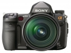

器材库 > 35mm画幅可换镜头数码相机 > α900

规格总览
产品类型
35mm画幅可换镜头数码相机
发布日期
2008-09-10
停产
是
影像规格
影像传感器
CMOS
影像传感器尺寸
35.9 × 24.0mm
总像素
2570万
有效像素
2460万
影像处理器
BIONZ
色彩滤镜
RGB原色彩色滤镜
色彩空间
sRGB/Adobe RGB
最大解像度
6048x4032
静态图像格式
JPEG, RAW, RAW+JPEG
静态图像尺寸
全幅尺寸：6048x4032; 6048x3408; 4400x2936; 4400x2472; 3024x2016; 3024x1704; APS-C尺寸：3984 X 2656; 2896 X 1928; 1984 X 1320
静态图像质量
JPEG标准，JPEG精细，JPEG超精细，RAW，cRAW(压缩)，RAW+JPEG(精细)，cRAW+JPEG(精细)
画幅比
3:2, 16:9
防抖系统
机身防抖，降低约2.5-4档的快门速度
除尘系统
低通滤波器的防静电涂层和影像传感器位移装置
镜头和对焦
镜头卡口
Minolta/Konica-Minolta/Sony AF
兼容镜头
索尼镜头和柯尼卡美能达/MAXXUM/DYNAX镜头
对焦系统类型
TTL相位检测
对焦点
9点+10个辅助对焦点
对焦模式
单次自动对焦/自动对焦自动选择/连续自动对焦/直接手动对焦/手动对焦
AF辅助灯/光
有
手动对焦
支持
曝光控制
测光模式
中央重点测光, 多分区评价测光, 点测光
测光范围
0EV~20EV
曝光模式
Auto, P（程序自动曝光）, A（光圈优先自动曝光）, S（快门速度优先自动曝光）, M（手动测光曝光）
快门类型
机械控制，纵走式，焦平面快门
快门速度
1/8000秒 - 30秒，B门；闪光同步速度：1/250 秒（防抖功能关闭），1/200秒（防抖功能开启）
曝光补偿
±3EV以1/3或1/2EV级调整
自动曝光锁
有
自动包围曝光
连续3张或5张曝光可选,步级:1/3EV或1/2EV或2/3EV或2EV可选, 2EV只在连续3张曝光下可选
ISO感光度
200, 400, 800, 1600, 3200, 自动
白平衡
日光, 闪光灯, 色温调节, 阴天, 自定义, 阴影, 自动, 钨丝灯, 日光灯
自拍
10秒, 2秒
连拍
每秒5张（高速）/ 每秒3张（低速），最多285/105张JPEG（标准/精细）或 11张JPEG（超精细）或 12张RAW 或 12张cRAW（压缩）或 10张RAW+JPEG 或 10张cRAW+JPEG
闪光灯
外接闪光灯
HVL-F58AM / HVL-F42AM
取景器/显示屏
取景器
眼平五棱取景器, 固定
取景范围
100%
取景放大倍率
0.74倍
屈光度调节范围
-3.0 ~ +1.0
反光镜
快速瞬回半透明
景深预视
有
LCD类型
彩色TFT LCD
LCD尺寸
3.0英寸
LCD像素
92万
视野率
100%
文件输入/输出
存储卡
CF, MS/MS PRO记忆棒
数据接口
USB2.0
视频/音频接口
HDMI 输出, Video 输出 (NTSC/PAL)
支持打印协议
PictBridge, DPOF, PIM, EXIF Print
电源
电池
NP-FM500H
续航能力
拍摄约880张
外接电源
AC电源适配器：AC-VQ900AM(可选配)
机身规格
材质
镁合金外壳
颜色
黑色
尺寸
156.3 x 116.9 x 81.9mm
重量
850g
其它
附件
锂电池NP-FM500H，充电器BC-VM10
drlyly752016-07-21 11:285 分
操作性 5.00功能性 5.00美观性 5.00趣味性 5.00耐用性 5.00性价比 5.00解像力 5.00色彩还原 5.00
tangxingkun2014-10-15 18:174.88 分
操作性 4.50功能性 4.50美观性 5.00趣味性 5.00耐用性 5.00性价比 5.00解像力 5.00色彩还原 5.00
muduo2013-08-31 10:364.94 分
操作性 5.00功能性 5.00美观性 5.00趣味性 5.00耐用性 4.50性价比 5.00解像力 5.00色彩还原 5.00
破镜2013-02-26 11:43
teslaroadster2013-01-28 20:184.56 分
操作性 4.50功能性 4.00美观性 5.00趣味性 4.00耐用性 4.50性价比 4.50解像力 5.00色彩还原 5.00
我用美能达2012-12-14 23:094.81 分
操作性 4.50功能性 4.50美观性 5.00趣味性 4.50耐用性 5.00性价比 5.00解像力 5.00色彩还原 5.00
zitar2012-06-27 11:125 分
操作性 5.00功能性 5.00美观性 5.00趣味性 5.00耐用性 5.00性价比 5.00解像力 5.00色彩还原 5.00
重度越野2012-01-26 02:154.75 分
操作性 4.50功能性 4.50美观性 5.00趣味性 4.50耐用性 4.50性价比 5.00解像力 5.00色彩还原 5.00
张朝顺2011-11-06 09:244.94 分
操作性 5.00功能性 4.50美观性 5.00趣味性 5.00耐用性 5.00性价比 5.00解像力 5.00色彩还原 5.00
心自平淡难逐波2011-08-31 22:314.88 分
操作性 5.00功能性 4.00美观性 5.00趣味性 5.00耐用性 5.00性价比 5.00解像力 5.00色彩还原 5.00
丙辰年生人2011-08-07 22:114.88 分
操作性 4.50功能性 4.50美观性 5.00趣味性 5.00耐用性 5.00性价比 5.00解像力 5.00色彩还原 5.00
HWJ2011-04-26 13:144.63 分
操作性 4.50功能性 4.50美观性 4.50趣味性 4.50耐用性 4.00性价比 5.00解像力 5.00色彩还原 5.00
chjlin882011-03-02 05:474.81 分
操作性 4.50功能性 5.00美观性 4.50趣味性 5.00耐用性 4.50性价比 5.00解像力 5.00色彩还原 5.00
larry67832011-01-17 11:184.88 分
操作性 5.00功能性 5.00美观性 5.00趣味性 4.50耐用性 4.50性价比 5.00解像力 5.00色彩还原 5.00
shakes2010-10-04 22:314.44 分
操作性 4.50功能性 4.50美观性 5.00趣味性 4.50耐用性 4.50性价比 3.50解像力 4.50色彩还原 4.50
karatex2010-08-23 07:304.75 分
操作性 4.50功能性 5.00美观性 4.50趣味性 5.00耐用性 5.00性价比 4.00解像力 5.00色彩还原 5.00
wriggle2010-08-11 11:314.81 分
操作性 4.50功能性 5.00美观性 5.00趣味性 5.00耐用性 5.00性价比 4.50解像力 4.50色彩还原 5.00
美能达的心2010-06-24 17:103.63 分
操作性 3.00功能性 4.00美观性 3.50趣味性 2.50耐用性 3.50性价比 5.00解像力 4.00色彩还原 3.50
唐宋元明清2010-03-20 20:254.63 分
操作性 5.00功能性 4.50美观性 4.50趣味性 4.50耐用性 5.00性价比 5.00解像力 4.50色彩还原 4.00
zhaobin22332010-01-27 00:364.63 分
操作性 4.50功能性 4.50美观性 4.50趣味性 4.50耐用性 4.50性价比 5.00解像力 5.00色彩还原 4.50
产品图 / 样片
α900-04
评测 / 相关文章
- 详细内容 （存档）
- 索尼全画幅数码单反α900试用手记 （存档）
- 索尼α900+蔡司24-70/2.8试片 （存档）
- ［资讯］索尼宣布全幅数码单反相机α900停产 （存档）
- ［资讯］索尼专访，中端单电已经蓄势待发 （存档）
- ［影像］索尼α900玩转徕卡R镜头 （存档）
- ［专题］何日话别？最该退役的那些单反们 （存档）
- ［资讯］索尼α900最新固件：V.2.00 （存档）
- ［资讯］史上最高分辨率数码照片出炉 （存档）
- ［资讯］索尼α900+蔡司24-70/2.8试片 （存档）
- ［资讯］西川和久镜头中的女优（2）：α900+50/1.4 （存档）
- ［资讯］西川和久新片：α900+50/1.4 （存档）
- ［资讯］【广州】雨中试用索尼α900 （存档）